Overview
In an earlier post, we discussed Shiny, a framework for building web applications using R, and suggested that we might be overdoing it a little. Whether true or not, Shiny is very popular indeed, and so I thought it would be fun to look at how one might go about deploying a Shiny application for public consumption. So, what follows is just a description of various deployment methods, but note that while Shiny is the focus, some of the deployment methods apply to more general scenarios–notably those approaches based upon containerisation. The post is on the long side, so we summarise the methods here briefly:
- deploy using a hosted service, shinyapps.io
- deploy locally using an enterprise tool such RStudio Connect (not discussed)
- deploy using
An Example Application
It doesn’t really matter what our application is, but for illustration, let us simply use the following simple application throughout:
library(shiny)
ui <- fluidPage(
titlePanel("Hello runif from Shiny!"),
sidebarLayout(
sidebarPanel(
sliderInput(
inputId = "nobs",
label = "Number of observations:",
min = 1, max = 10000, value = 1000
)
),
mainPanel(
plotOutput(outputId = "distPlot")
)
)
)
server <- function(input, output) {
data <- reactive({
runif(input$nobs)
})
output$distPlot <- renderPlot({
hist(
data(), col = "#75AADB", border = "white",
xlab = "x",
main = "distribution of random uniform numbers")
})
}
shinyApp(ui = ui, server = server)
The application looks as follows:
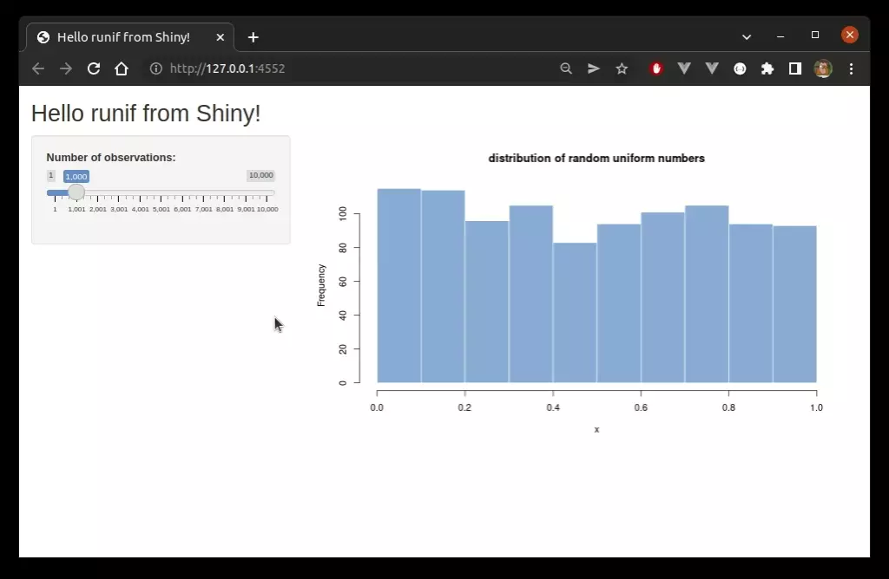NGINX
It is easy enough to run applications locally on some specified or random port. In real-world applications, though, applications will usually be made available to external users via some sort of reverse proxy. NGINX is a great choice, and is easy enough to get going. As with many things these days, the easiest way to get up and running, at least for testing or development purposes, is via a container. There are official images, and we can get a copy easily (I’m using Docker, but things can be modified easily enough for other options, such as podman):
docker pull nginx
An instance suitable for local testing can be stood up easily by running something like:
docker run -d --rm --name nginx --network host nginx
We can gain access to a terminal in the container by running:
docker exec -it nginx /bin/bash
Then, to test configuration changes we edit the file located at /etc/nginx/conf.d/default.conf, then reload NGINX by running:
service nginx reload
Either way, if running properly, visiting localhost or localhost:80 should produce something like the following:
shinyapps.io
RStudio, creators of Shiny, offer a decent hosted service, shinyapps.io, which is both cheap and easy to use, and is highly recommended for many types of user. We can demonstrate deployment of our app using the free tier. First, users need to visit the shinyapps.io website and create an account if they haven’t already. Once signed in, open the dashboard, then click ‘Account’, then ‘Tokens’, and finally ‘Add Token’:

Clicking ‘Show’ will open a dialog, and the token can then safely be copied to your clipboard:
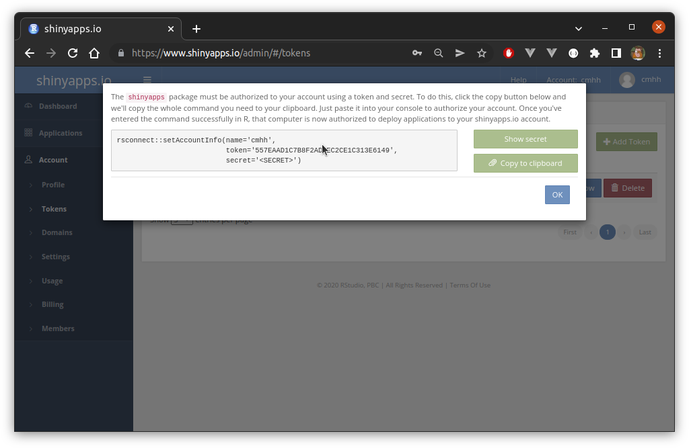Assuming the rsconnect package is installed, users can then paste and run this code directly in R. This links R to your shinyapps.io account, after which apps can be deployed easily from R. This is especially easy for RStudio users, where we just click a single button:
Users will then see a simple dialog as follows:
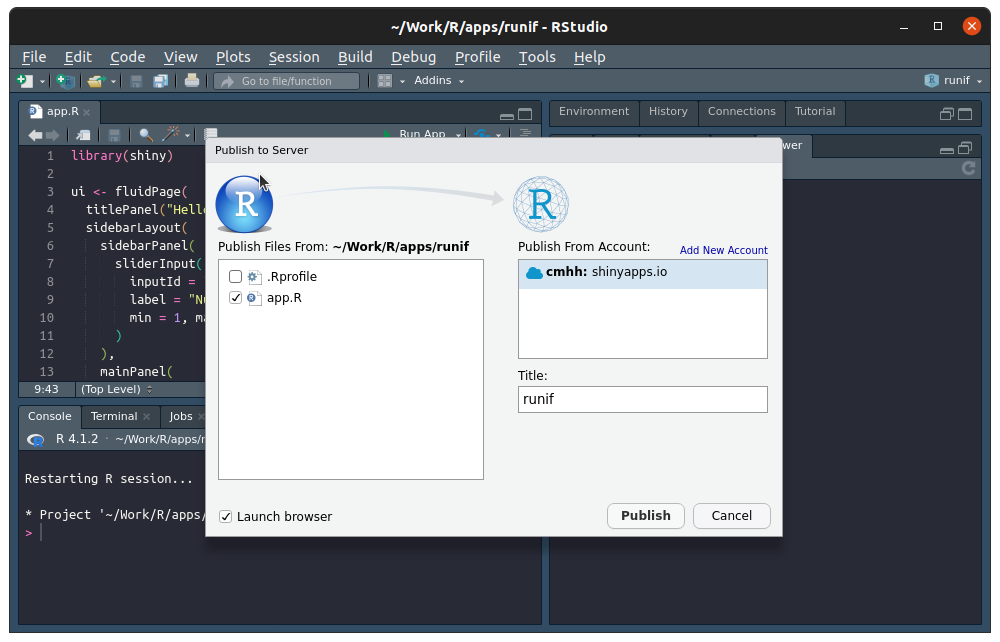After waiting a short while, a web browser should open with the running app:
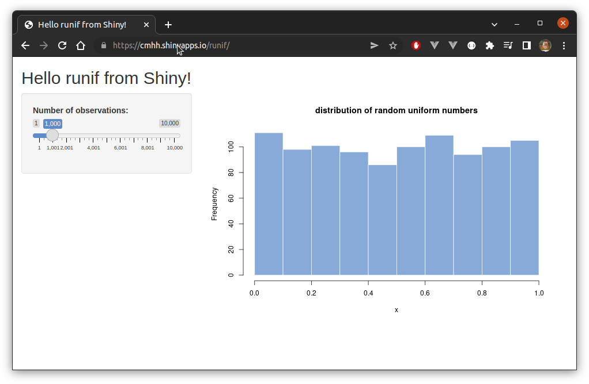Those not using RStudio can deploy using the rsconnect::deployApp function, but we omit the details. shinyapps.io offers a few nice features, such as the ability to query logs from R, and manage resources assigned to apps via the shinyapps.io dashboard.
Shiny Server Open Source
Shiny Server Open Source is a free server application that lets users host multiple shiny apps easily from a single host. It is relatively easy to get up and running. For example, to install on Ubuntu, assuming you already have both R and the shiny package installed, we simply run:
$ sudo apt-get install gdebi-core
$ wget https://download3.rstudio.org/ubuntu-14.04/x86_64/shiny-server-1.5.17.973-amd64.deb
$ sudo gdebi shiny-server-1.5.17.973-amd64.deb
I prefer to isolate things from the host, and use containers where possible. One can get Shiny running via Docker as follows:
$ docker pull rocker/shiny
$ docker run -d --rm --name shiny-server --network host -v <path to apps>:/srv/shiny-server rocker/shiny
If all went well, Shiny Server will be running on port 3838 on the host, and you’ll be greeted with the following:
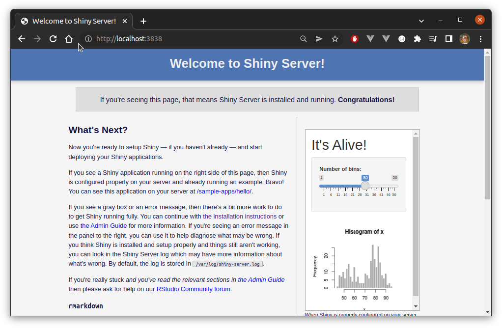To make our app available via Shiny Server, all we need to do is copy the application to the /srv/shiny-server folder inside our container. For example, assuming our app was saved locally as ./runif/app.R, and this had been copied to /srv/shiny-server/runif/app.R in the container, we could browse to localhost:3838/runif to see:
Finally, if NGINX is running on the same host, it easy enough to make Shiny Server available to the public using a location directive as follows:
server {
location /shiny/ {
rewrite ^/shiny/(.*)$ /$1 break;
proxy_pass http://127.0.0.1:3838/;
proxy_redirect http://127.0.0.1:3838/ $scheme://$host/shiny/;
proxy_http_version 1.1;
proxy_set_header Upgrade $http_upgrade;
proxy_set_header Connection "upgrade";
}
}
Doing this would mean that our app would be available at both localhost:3838/runif/ and localhost/shiny/runif/. Importantly, external users would be able to reach the app from https://<domain>/shiny/runif/.
R -e ... + NGINX
We can start a Shiny application directly from the terminal with relative ease. For example, assuming our app is in a folder runif, we could start it on port 3001 as follows:
nohup R -e "shiny::runApp('runif', host = '0.0.0.0', port = 3001)" > runif.log 2>&1 &
Then, of course, the app will be available on port 3001 on the host:
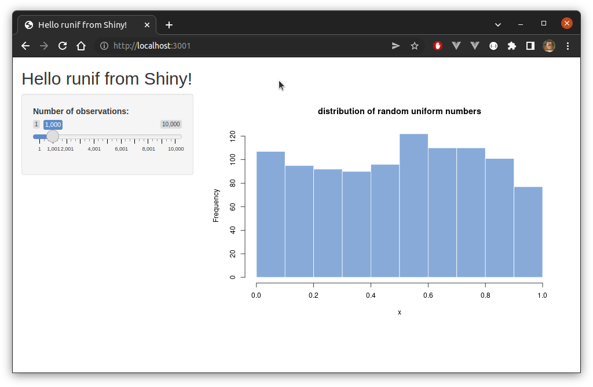As before, if NGINX is running on the same host, it easy enough to make the available to the public using a location directive as follows:
location /runif/ {
proxy_pass http://localhost:3001/;
proxy_http_version 1.1;
proxy_set_header Upgrade $http_upgrade;
proxy_set_header Connection "upgrade";
}
In this case, the app would then be available generally via localhost/ruif/ or https://<domain>/runif/:
Containerising Shiny Apps
It is relatively straightforward to containerise an application. Consider the following Dockerfile:
FROM ubuntu:20.04
ENV DEBIAN_FRONTEND=noninteractive
ENV SHELL=/bin/bash
RUN apt-get update && apt-get -y dist-upgrade && \
apt install -y --no-install-recommends \
locales software-properties-common dirmngr wget lsb-release && \
wget -qO- https://cloud.r-project.org/bin/linux/ubuntu/marutter_pubkey.asc | \
tee -a /etc/apt/trusted.gpg.d/cran_ubuntu_key.asc && \
add-apt-repository "deb https://cloud.r-project.org/bin/linux/ubuntu $(lsb_release -cs)-cran40/" && \
apt-get install -y --no-install-recommends r-base r-base-dev && \
sed -i -e 's/# en_US.UTF-8 UTF-8/en_US.UTF-8 UTF-8/' /etc/locale.gen && \
dpkg-reconfigure --frontend=noninteractive locales && \
update-locale LANG=en_US.UTF-8 && \
alias make="/usr/bin/make -j 20" && \
R -e "install.packages(c('shiny'))" && \
apt-get remove -y wget lsb-release r-base-dev && \
apt-get autoremove -y && \
apt-get clean -y && \
rm -rf /var/lib/apt/lists/*
EXPOSE 3838
CMD R -e "shiny::runApp('/app', host = '0.0.0.0', port = 3838)"
We can build this image as follows:
docker build -t shiny .
To start our test application on port 3001, say, we’d then simply run:
docker run --rm --name runifapp -p 3001:3838 -v <path to runif>/runif:/app shiny
(Note that the Dockerfile described isn’t generally useful since we’d need to ensure considerably more R packages were available to be sure that any particular Shiny app would run correctly.)
ShinyProxy
ShinyProxy is similar to Shiny Server in that it can be used to deploy multiple shiny applications easily on a single host. However, while it is completely open source, it still supports a number of useful enterprise features, such as LDAP authentication. Under the hood, ShinyProxy runs applications by spinning up containers on demand, which is neat!
Installation is easy enough. Of course, Docker needs to be installed and running, but ShinyProxy needs TCP access in order to start containers. This varies by system, but for systems using systemd we can just run:
sudo systemctl edit docker
and then add the following lines in the appropriate place (comments make it clear where):
[Service]
ExecStart=
ExecStart=/usr/bin/dockerd -H unix:// -D -H tcp://127.0.0.1:2375
But something like:
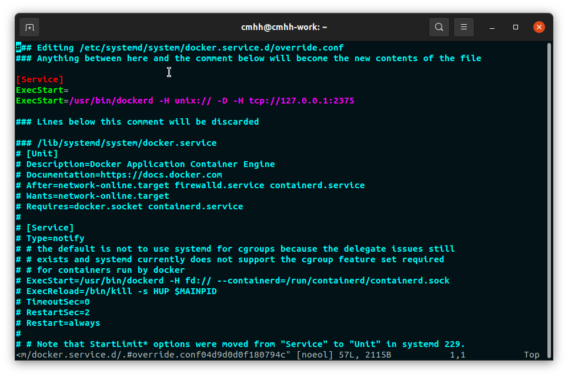Then we simply download a copy of ShinyProxy from the ShinyProxy downloads page. At the time of writing, the most recent version is 2.6.0. It is way beyond the scope of a short post such as this to cover ShinyProxy in great detail, so we consider just a very simple setup. Assume first that the Docker image, shiny, as described above exists. Further assume that the following file exists in the same directory as the ShinyProxy jar:
server:
servlet:
context-path: /shinyproxy
proxy:
title: My Shiny Proxy
logo-url: https://www.openanalytics.eu/shinyproxy/logo.png
landing-page: /
heartbeat-rate: 10000
heartbeat-timeout: 60000
port: 8081
authentication: none
docker:
cert-path: /home/none
url: http://localhost:2375
port-range-start: 20000
specs:
- id: runif
display-name: runif
description: Historgram of a random uniform sequence
container-image: shiny
container-volumes: [ "</path/to/shiny/app>/runif:/app" ]
logging:
file:
name: shinyproxy.log
We then start ShinyProxy by running:
java -jar shinyproxy-2.6.0.jar
Given the config, ShinyProxy will then be running on port 8081. A landing page will be available at localhost:8081/shinyproxy:
We can click the runif link to get to our app, or just navigate directly to localhost:8081/shinyproxy/app/runif:
As in earlier examples, we can use NGINX to proxy easily enough. A sufficient location directive in this case would be (note that the location must match the context-path field from application.yml):
location /shinyproxy/ {
proxy_pass http://localhost:8081/shinyproxy/;
proxy_http_version 1.1;
proxy_set_header Upgrade $http_upgrade;
proxy_set_header Connection "upgrade";
}
ShinyProxy will then be available at localhost/shinyproxy/, or externally at https://<domain>/shinyproxy/:

Our Container Revisited…
In the next example we’ll deploy a Shiny app to a cloud-hosted service, and we’ll do so using a container. We’ll want our container to be self contained, so we’d prefer our app to be copied into the image. So, let us define a new container which we’ll use for the rest of this blog, defined by the following Dockerfile (where, of course, our build context contains our app in a folder runif):
FROM ubuntu:20.04
ENV DEBIAN_FRONTEND=noninteractive
ENV SHELL=/bin/bash
RUN apt-get update && apt-get -y dist-upgrade && \
apt install -y --no-install-recommends \
locales software-properties-common dirmngr wget lsb-release && \
wget -qO- https://cloud.r-project.org/bin/linux/ubuntu/marutter_pubkey.asc | \
tee -a /etc/apt/trusted.gpg.d/cran_ubuntu_key.asc && \
add-apt-repository "deb https://cloud.r-project.org/bin/linux/ubuntu $(lsb_release -cs)-cran40/" && \
apt-get install -y --no-install-recommends r-base r-base-dev && \
sed -i -e 's/# en_US.UTF-8 UTF-8/en_US.UTF-8 UTF-8/' /etc/locale.gen && \
dpkg-reconfigure --frontend=noninteractive locales && \
update-locale LANG=en_US.UTF-8 && \
alias make="/usr/bin/make -j 20" && \
R -e "install.packages(c('shiny'))" && \
apt-get remove -y wget lsb-release r-base-dev && \
apt-get autoremove -y && \
apt-get clean -y && \
rm -rf /var/lib/apt/lists/*
COPY runif /app/
EXPOSE 3838
CMD R -e "shiny::runApp('/app', host = '0.0.0.0', port = 3838)"
Azure App Services
Azure is the suite of cloud services managed by Microsoft, and there are several viable options for doing something like deploying a Shiny app. We can deploy things manually on a remote virtual machine using approaches already outlined above, but one reasonable option is to deploy a container using Azure App Service. Note that most things can be done on Azure either through the Azure Portal using a largely point-and-click interface, or at the command-line using Azure CLI. We’ll use the portal here where possible, but the CLI will still be required. Either way, we assume interested readers have access to an Azure account (and, hence, the portal) already, and have also installed the CLI themselves.
First, we need to create an Azure Container Registry. There’s a few ways to get there, but one way is to click ‘All services’…
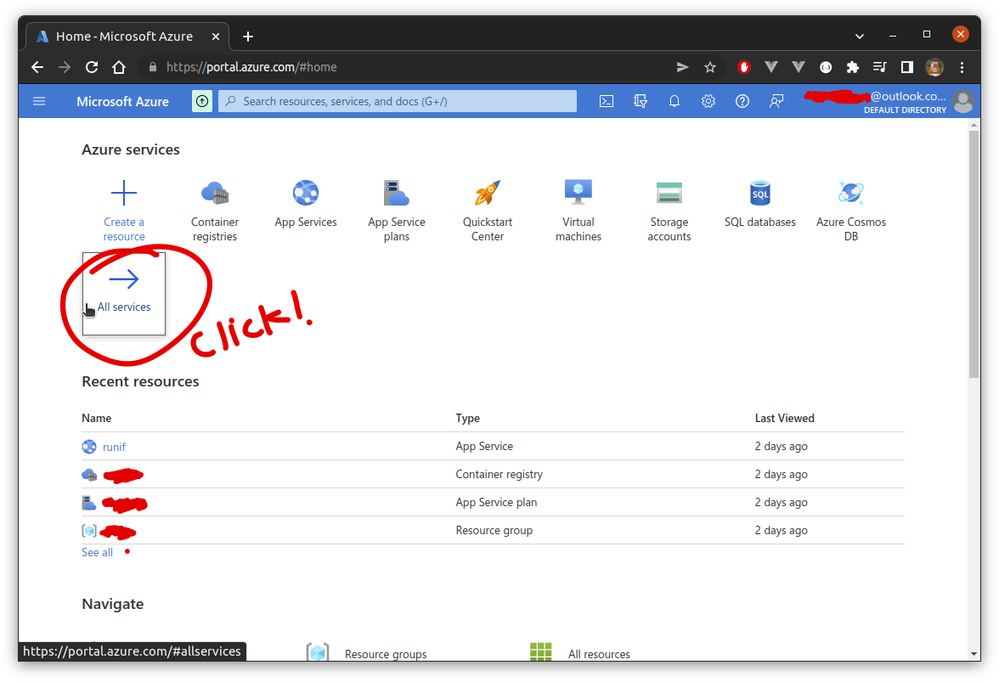…then select ‘Containers’ from the ‘Categories’ menu, and then ‘Container registries’…
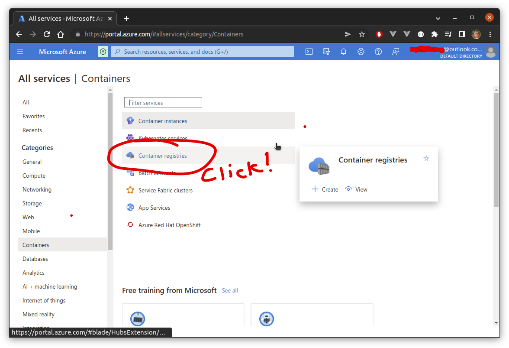…then click ‘Create’…
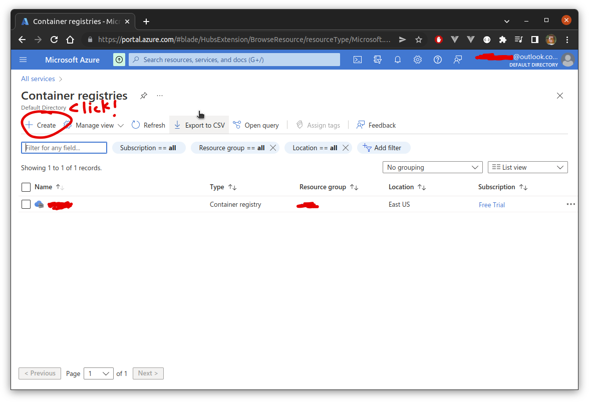and, finally, we are presented with a form which is straightforward to complete…
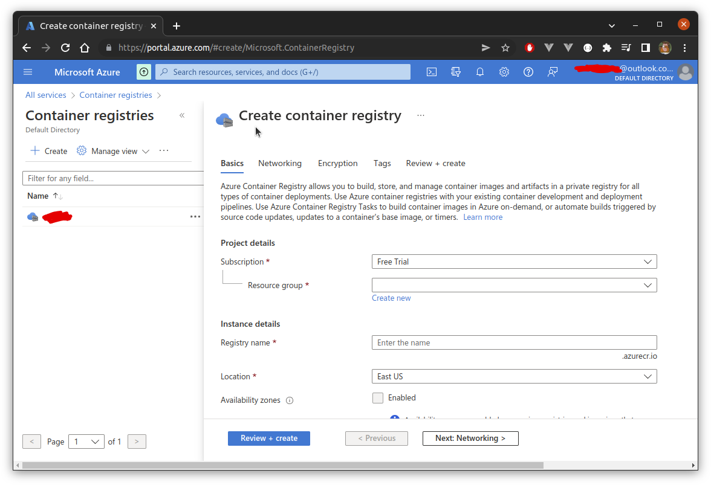At this point, we need to push our container to the registry. We first need to connect to the container registry on whichever machine our image resides. To do this we first connect to Azure by runing:
az login
A browser window will open and await your Azure credentials, after which you’ll be logged in. Then, we connect to the registry:
az acr login --name myregistry
Then, to push the runifapp image:
$ docker tag runifapp myregsitry.azurecr.io/test/runifapp
$ docker push runifapp.azurecr.io/test/runifapp
After this, we can deploy the image simply by browsing to the image and clicking ‘Deploy to web app’ from the available context menu (note you will also need to have an ‘App Service Plan’ available, but there’s only so much we can cover here!):
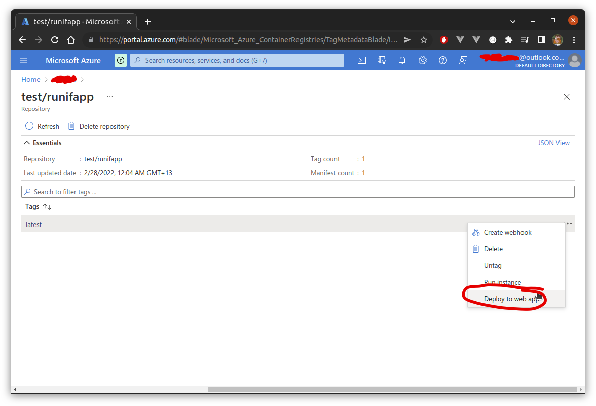It can take a long time to deploy, but once up and running, you’ll be able to find an external link from the main resource page:
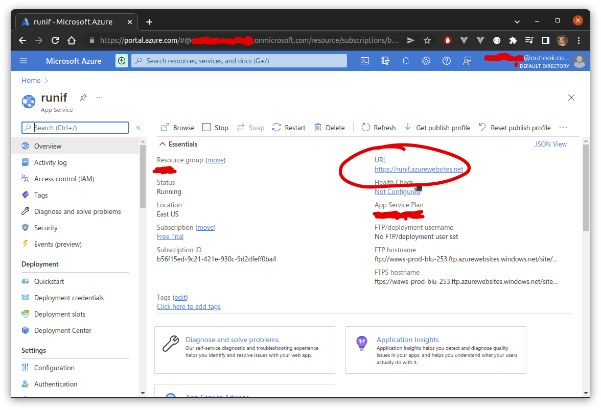 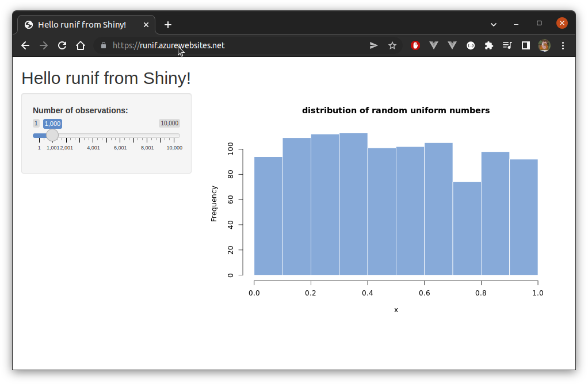Note that Shiny applications require WebSockets availability, so make sure this is enabled and save yourself a bunch of frustration!
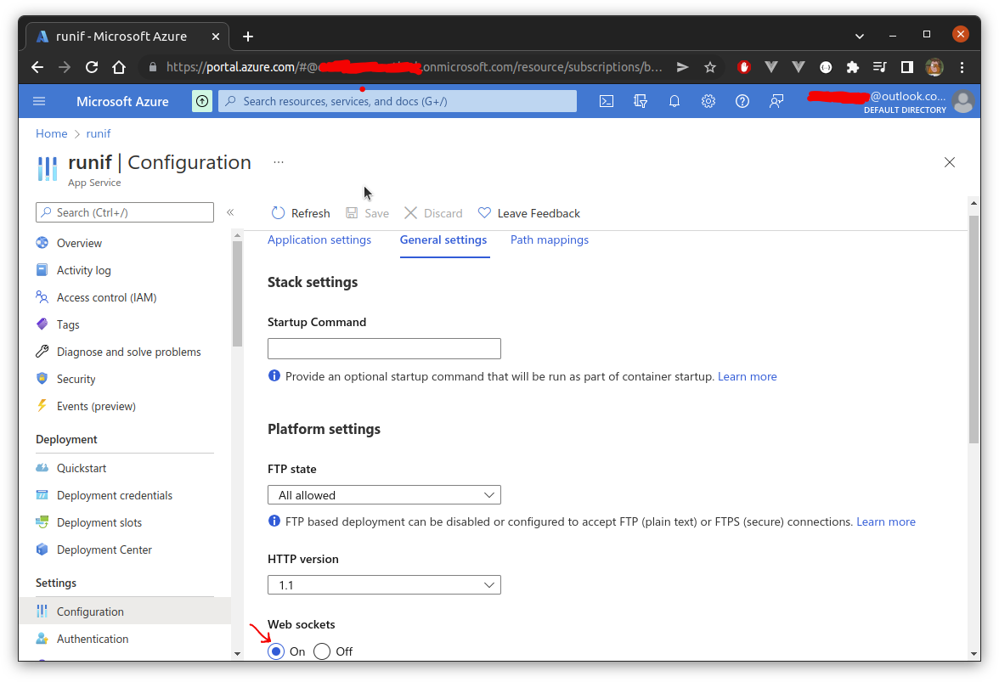AWS
Their are a few options for deploying Shiny apps on AWS. Again, we could deploy manually on an EC2 instance, using containers or not. But otherwise we ought to be able to do this via Elastic Beanstalk, or else by first pushing our image to Elastic Container Registry, and then deploying via Elastic Container Service. I had a quick go at the latter, but the setup became reasonably involved, involving internet gateways and so on, so I decided it to leave it for this post. AWS App Runner looks like a much simpler option and I was able to deploy the app using this, only to find out App Runner does not support WebSockets and the deployed app didn’t work correctly. Hopefully Amazon add WebSocket support to App Runner soon.